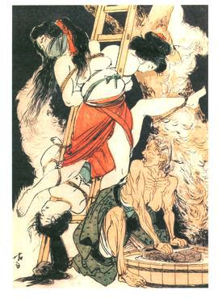
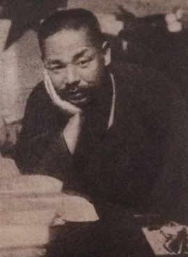

¿Qué es el Shibari?
Origen y marco de la atadura japonesa

El Shibari es una práctica que busca conseguir la inmovilización corporal por medio de cuerdas de fibra natural en base a patrones estéticos diseñados para habilitar que la restricción demovimiento pueda ser mantenida por periodos prolongados de tiempo para su uso con fines de control y Dominación dentro de un contexto Sado-Masoquista. Esta disciplina se desarrolló a partir de la disciplina de atadura militar Samurái conocida como Hojojutsu.

En la década de los 1920's el pintor y fotógrafo japonés Seiu Itō descubre el Hojojutsu y empieza a experimentar con estos patrones de inmovilización con prostitutas y sus propias modelos, adaptando el antiguo arte militar a la fisionomía del cuerpo femenino de modo que facilite el contacto sexual.
